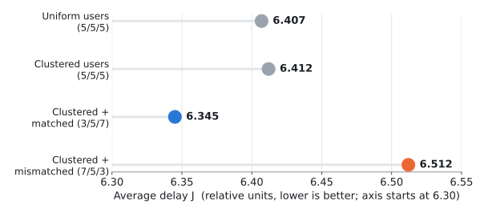
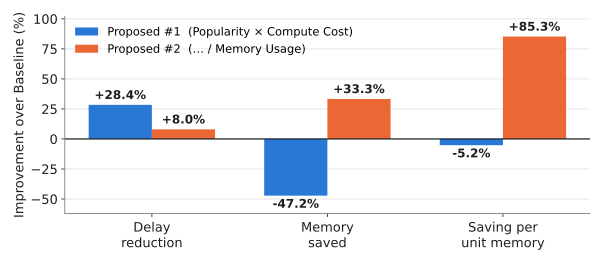
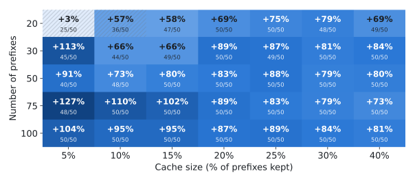

Keep the Right Things Close: Smarter Caching for AI Services at the Network Edge
Where to store AI results, and which ones are worth the memory
[TODO] Author 1, Author 2 (Seunghwan), Advisor
· [TODO] Lab name, Jeonbuk National University
[TODO] Lab / university logo
1. Overview
AI services (translation, chatbots, weather Q&A …) run on powerful servers in a far-away
cloud. Every request travels there and waits for the model to compute an answer.
Many requests are repeats. If we keep a copy of the answer, or of the work already
done, in a small edge server near the user, the next person gets it much faster.
But edge servers are small. They can only hold a few items, so the real question is:
what should we keep, and where? Simply keeping "the most popular" items is not enough,
because items differ in how much time they save and how much memory they take.
2. Goals
WORK A · INTENT RESULT CACHING
Which AI results go on which edge server?
Place finished answers across several edge servers so the average waiting time is lowest,
accounting for distance and how expensive each answer is to recompute.
WORK B · LLM PREFIX (KV) CACHING
Which half-done LLM work is worth the memory?
LLM prompts often start the same way. Keep the model's intermediate work (KV cache) for shared
beginnings, and pick items that give the most saving per unit of GPU memory.
Work A · Placing Results on Multiple Edge Servers
Key idea. A cheap answer (Weather, compute time 1) is not worth storing on a far server:
the cloud is faster (2+2+1 = 5 < 7). An expensive one (Translation, 18) is: a far server (7)
still beats the cloud (2+2+18 = 22).
BaselineMost popular items, spread round-robin
Full MGEach step, place the item–server pair that cuts delay the most
DWSame gain rule, but only on the server whose turn it is (demand-weighted)
~20%
lower delay than Baseline (Full MG)
<1%
from the true optimum (MILP), avg.
<½
compute of Full MG for DW-distance, losing 1–2%
[TODO] poster_figs/fig1_improvement_vs_R Improvement over Baseline vs. number of users (R)
Full MG is best in all 60 settings (19.9–23.0% at N = 50).

Realistic scenario (N = 50, R = 30, users clustered 20:30:50). Giving more cache to
the busier server (3/5/7) gives the lowest delay; the opposite (7/5/3) is worst.
Weigh distance and recompute cost, not just popularity, and size each server's cache to its crowd.
Work B · Choosing LLM Prefixes to Cache
Key idea. On a real edge GPU, many models and precisions run side by side. Two prefixes
of the same length can cost the same compute but use up to 9× (model) and 4× (precision)
different memory. That is where smart selection pays off.
BaselineMost popular first
Proposed #1Popular × costly to compute
Proposed #2(Popular × costly) ÷ memory used

20 prefixes, keep top 5, median of 50 random setups. #1 cuts delay most but uses
~1.5× memory; #2 uses less memory and saves 85% more per unit of memory.

Saving per unit memory, #2 vs. #1 (cell: median, wins out of 50; hatched = fewer than 40 wins).
With 100 prefixes and 20% kept: +87% (50/50) and still 10.7% faster than Baseline (49/50).
Need speed? Use #1. Short on GPU memory? Use #2. They optimise different goals.
3. Conclusion
"Most popular first" leaves a lot on the table at the edge.
Work A: cost- and distance-aware placement cuts delay by ~20%, within 1% of optimal.
Work B: memory-aware selection gives +85% saving per unit memory over Baseline.
4. Future Work
More edge servers (5, 10)
Requests that change over time
Real GPU profiling of compute and memory costs
5. References
K. Shanmugam et al., "FemtoCaching," IEEE Trans. Inf. Theory, 2013.
Z. Qu et al., "TrimCaching," IEEE ICDCS, 2024.
L. Breslau et al., "Web caching and Zipf-like distributions," IEEE INFOCOM, 1999.
J. Wang et al., "KVCache Cache in the Wild," USENIX ATC, 2025.
L. Yang, Z. Liu, "Spatial Prefix Caching for Wireless Edge LLM Inference."